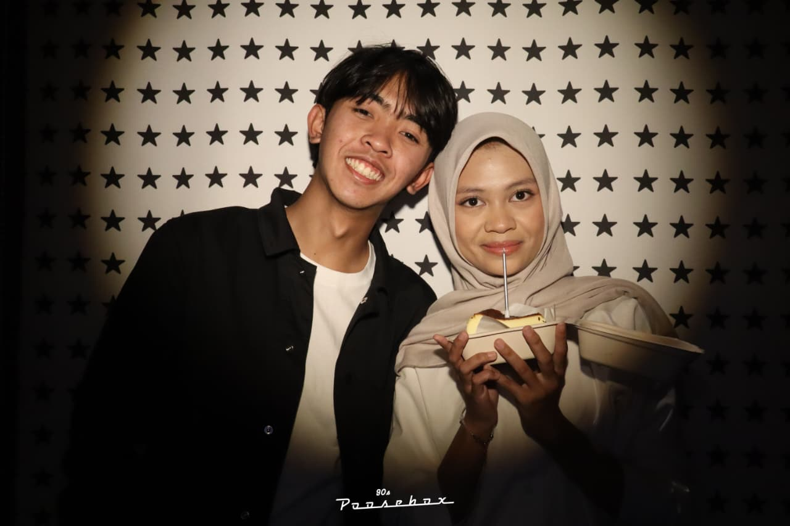
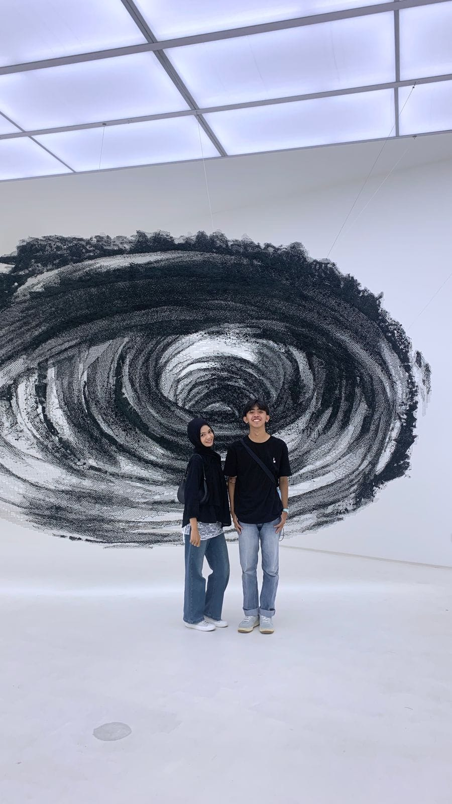
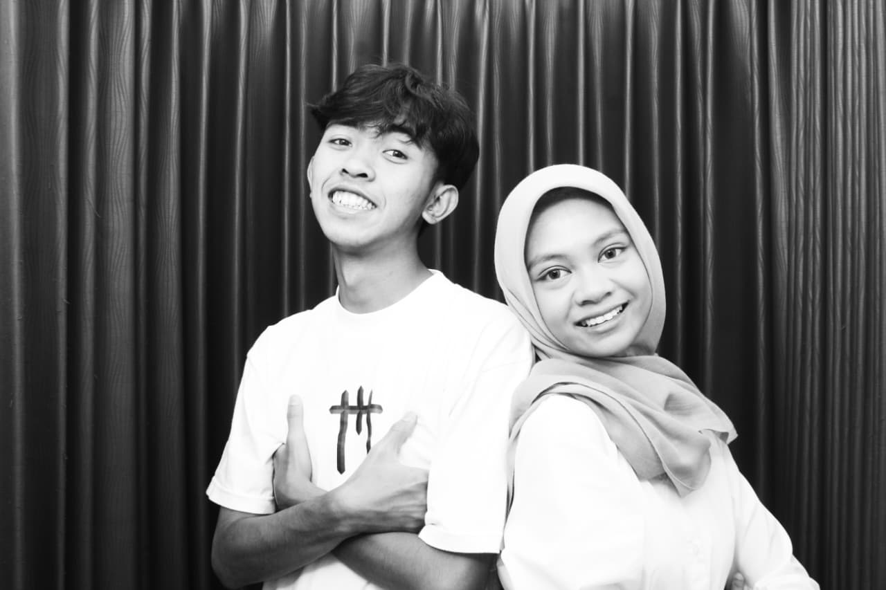
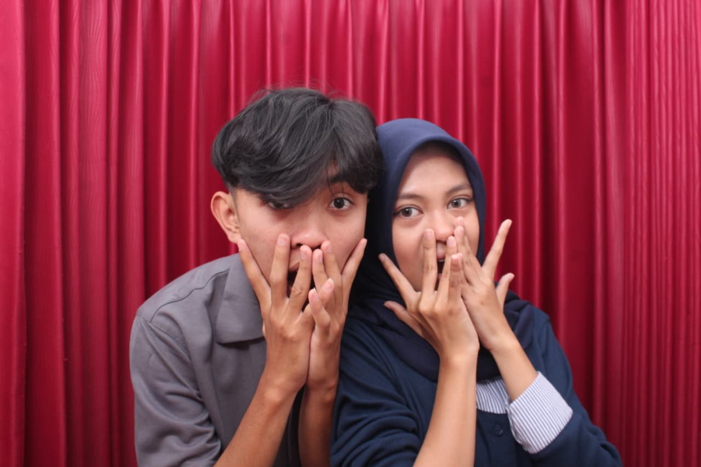
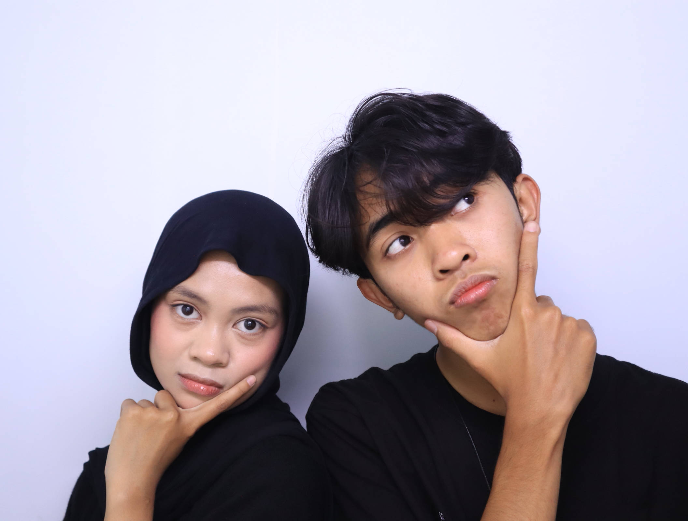
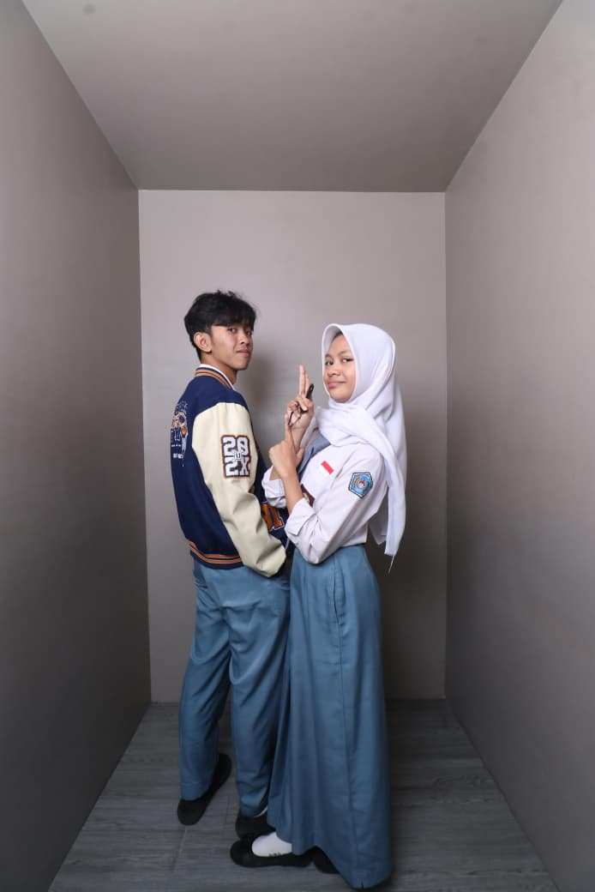
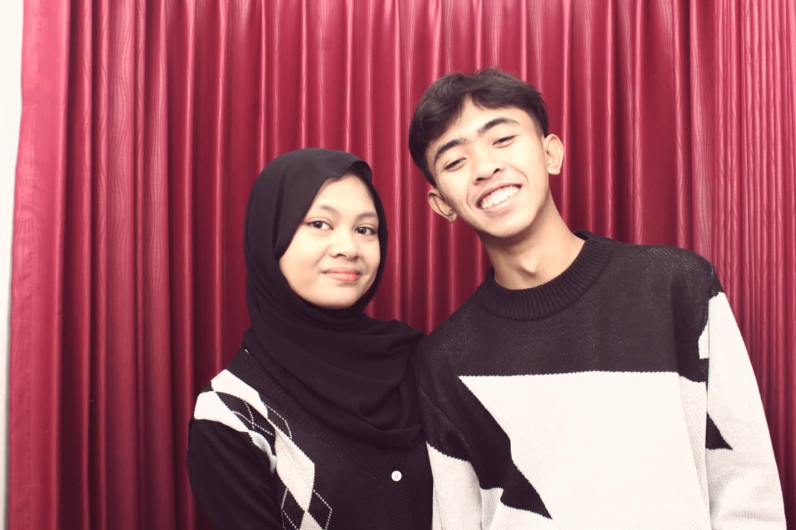
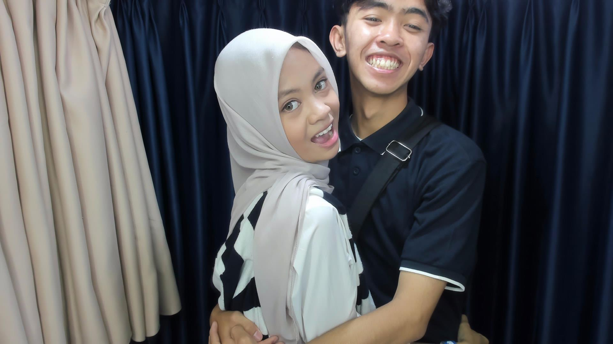
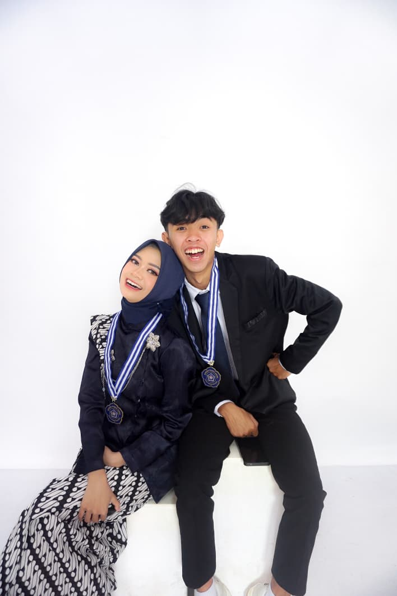
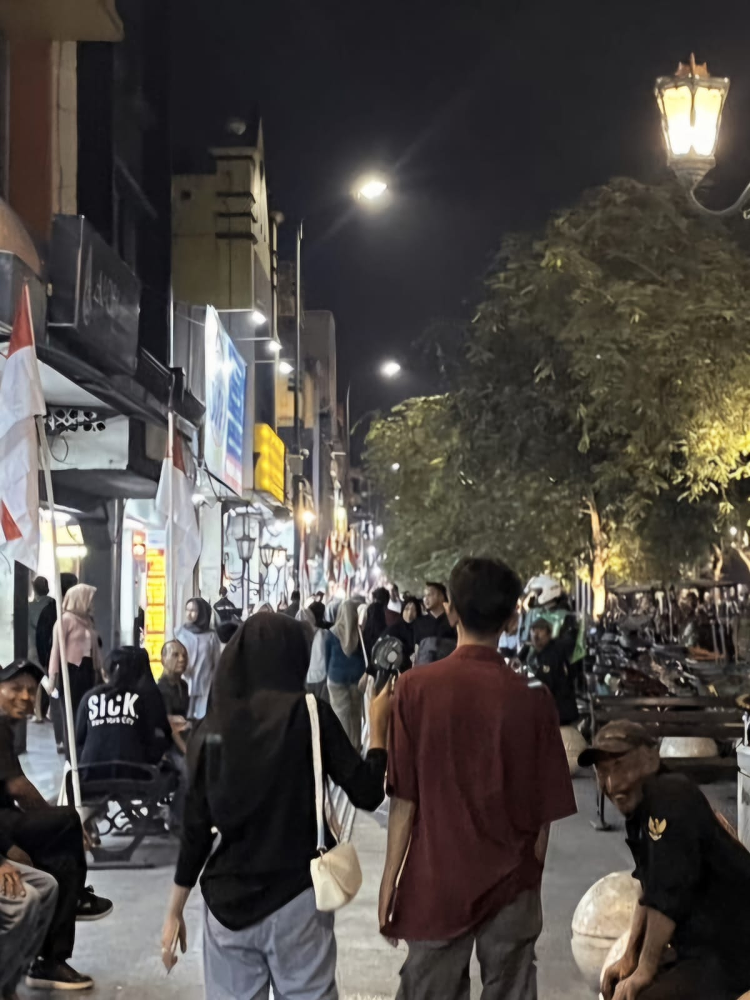

"Tak terasa, sudah 2 tahun hubungan kita berjalan. Banyak momen sedih, bahagia, takut, cemas kita lewati dan ciptakan. Semoga kita masih tetap selalu bersama sampai bertemu anniversary ke-3 kita dan anniversary selanjutnya. Semoga kita dapat membuat lebih banyak momen bahagia dan tinggalkan segala keburukan yang kita lalui bersama di tahun sebelum sebelumnya. Love you so much Nurma...."
"Sedikit rollback momen momen terbaik kita. Semoga di tahun selanjutnya kita bisa menciptakan momen serupa yang lebih banyak jumlahnya. Let's go on an adventure to exciting places and enjoy more delicious food and drinks..!"
"Ada sesuatu untukmu..."
(Klik untuk membuka)